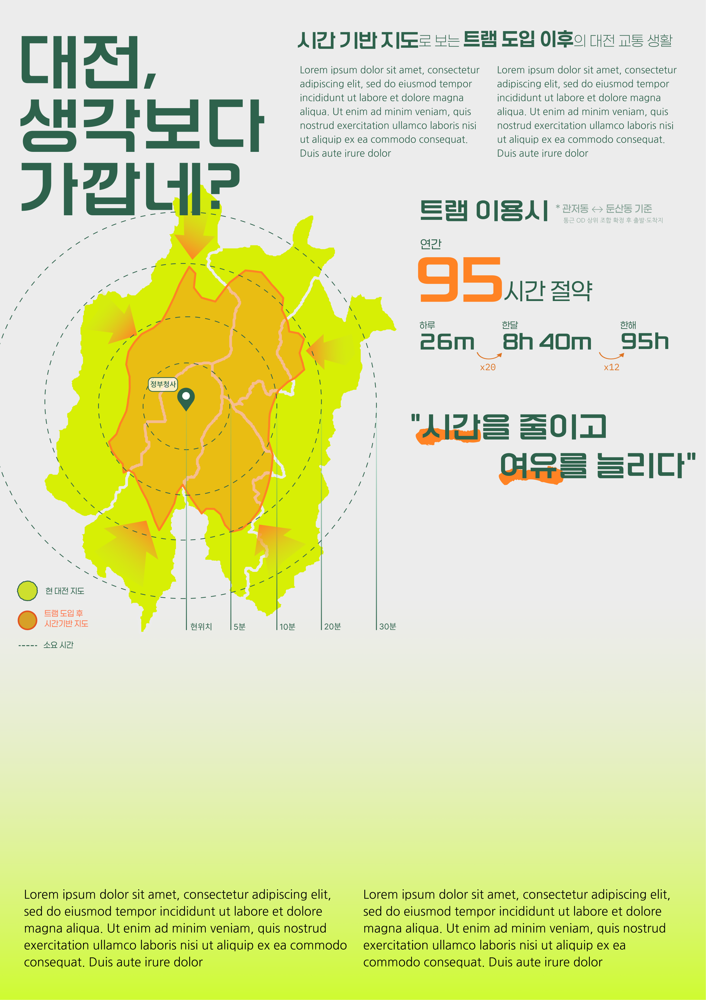

배율30%· A1 594×841mm / 2339×3312px · 읽는 순서 01→02→03

대전은 지금 도시철도 1호선 하나로 움직입니다. 판암에서 반석까지 20.5km, 도시의 한 방향뿐입니다. 나머지 이동은 도로가 떠맡고, 출퇴근 시간이면 그 도로가 먼저 멈춥니다.
그래서 거리 대신 시간으로 대전을 다시 그렸습니다. 한 지점에서 같은 시간에 닿는 곳을 이으면 도시는 전혀 다른 모양이 됩니다. 트램이 5개 구를 잇고 나면 이 모양이 어떻게 넓어질까요.
01
그래서, 내 하루는?
출근길에서 되찾는 26분
현재 · 기상 06:40 → 도착 08:10
현재
준비 20분도보버스 42분환승도보
트램 후 · 기상 07:06 → 도착 08:10
트램 후
준비 20분도보트램 28분도보
└ 더 잘 수 있는 26분
1년 95시간 = 8시간 수면 11.8일 · 2시간 영화 47편 · 꼬박 나흘
02
무엇이 생기나?
정거장 순서를 직선으로 편 모식도 · 시간 눈금은 본선 33.9km ÷ 표정속도 22.06km/h 산출값
5개 구를 한 바퀴로 잇는 순환선 38.8km · 45개 정거장
본선 33.9km · 연축지선 3.9km · 진잠지선 1.0km | 차량기지 1개소 |
완전 무가선 수소연료전지 트램 | 표준궤 복선 | 총사업비 1조 5,069억 원 | 운영 대전교통공사
2024. 12 착공본선 14개 공구 시공 중2030년 하반기 개통 전망
03
왜 가까워지나?
같은 30분에 더 멀리 닿는 이유는 세 가지 숫자로 설명됩니다.
① 환승 없이
2.9배
1호선 20.5km에 트램 38.8km가 더해져 59.3km. 도시를 한 방향이 아니라 한 바퀴로 잇습니다.
② 기다리지 않고
7분 30초
첨두시 배차 간격. 평시 10분, 하루 244회 운행 계획으로 시간표가 필요 없습니다.
③ 막히지 않고
22.06km/h
전용 궤도와 트램 우선 신호로 확보한 표정속도. 가장 빠르지 않아도 가장 예측 가능합니다.
이 지도를 읽는 법. 거리가 아니라 시간으로 그린 지도입니다. 정부청사에서 같은 시간에 닿는 지점을 이은 선이 등시선이며, 초록은 현재·오렌지는 트램 도입 이후입니다.
등시선·소요시간 산출 — 국가교통DB(KTDB) 통근 OD, 대전 도시철도 2호선 기본계획 통행시간 예측치
전제와 한계. 첨두시 07–09시 기준이며 도보 접근·대기·환승 시간을 포함합니다. 연 95시간은 통근 1일 왕복, 연 240일 기준으로 환산했습니다.
개통 시기·사업비는 2026년 6월 대전시 발표 기준이며 통합공정계획 확정에 따라 달라질 수 있습니다.